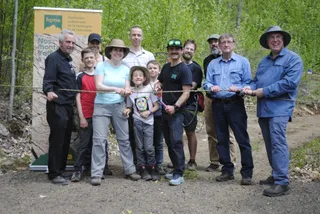

PANORAMA – BOWMAN

The PANORAMA cliff is a climbing wall that is 83.7% sport
et 16.3% trad. Ther are 3 main walls the primary wall wich is
composed of easy beginner friendly routes.
The Univercity wall is for experianced and advanced climbers